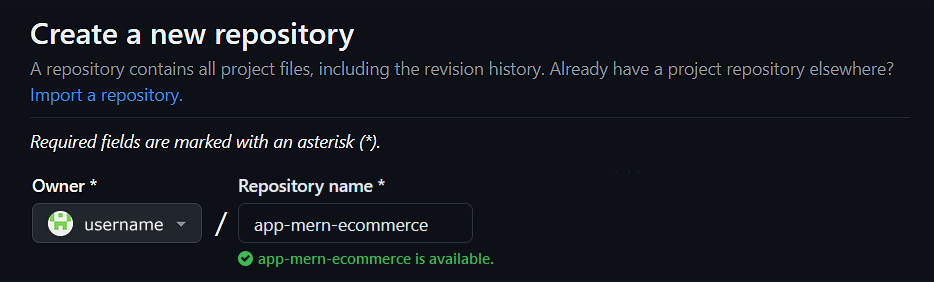
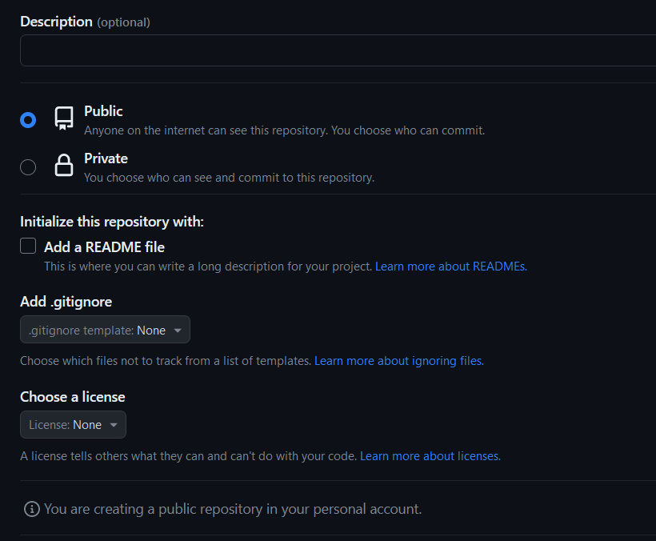
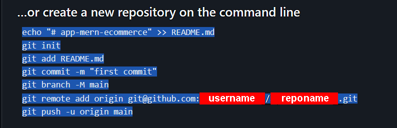
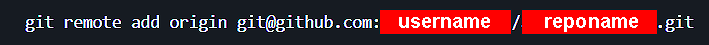
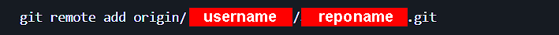
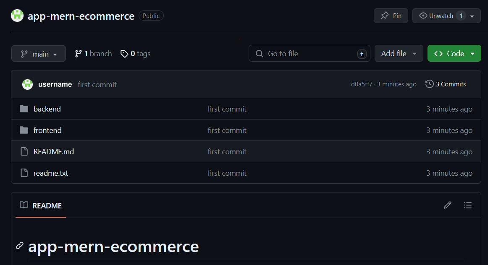
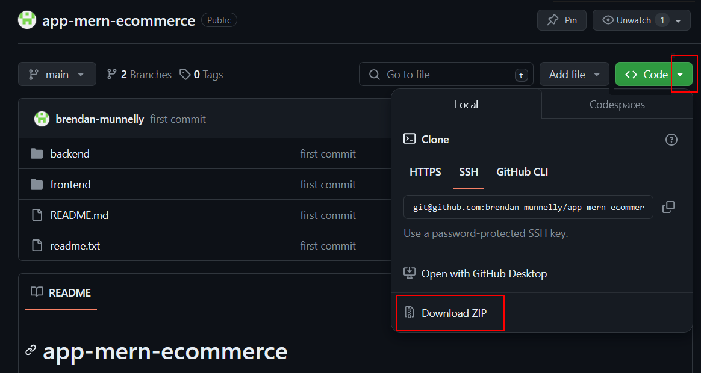

Project Goals
In this sixth stage of the MERN project, you will:
- Create local and remote repos for your MERN in the main (or master) branch, link the two repos, and push your app code from local to remote.
- Test that your MERN app files have deployed correctly by downloading and reinstalling them in a new folder on your local machine.
1: Create local and remote GitHub repos
On GitHub, your app will be stored in a new repo separate from all your other folders and files. Follow these steps:
-
In your GitHub account create a new repo to host your app.

- Give your new repo a name. 
- Do not initialise the new repo with a description, README, license, or .gitignore files.  Your repo should be empty.
- Click the green Create repository button
- GitHub displays a screen that includes commands for setting up a local repo for your new app and then pushing your app files to the GitHub remote repo. 
- In a terminal, navigate to the folder that contains the /frontend and /backend sub-folders of your MERN app.
-
Select and copy the above commands, and paste them into a text
file.
Include a git add . command as shown below, paste the
commands in to your terminal, and then run them.

- The git remote add assumes you are using SSH and have SSH keys set up in your GitHub account.  If you are using HTTPS instead, the command syntax would be as follows: 
2: Verify your app has been deployed
To check your app has been deployed to GitHub, do the following.
- In your browser, display the GitHub repo of your app. Ensure the Code tab is selected.
- You should see a screen similar to the following. 
- Near the top-right of the screen, click the dropdown arrow in the green Code button and then select the Download ZIP option. 
- Save the downloaded ZIP file and copy it to a new folder on your local machine - for example, app-mern-ecommerce-download.
- In your new folder, extract the ZIP file to create two main sub-folders - /frontend and /backend.
- Copy into the downloaded /backend sub-folder the .env file from the /backend folder of your original Express app. This .env is required for your backend server to access your account on MongoDB.
- In your downloaded folder, start the ReactJS frontend and Express backend servers, and verify your code runs correctly.
Project checklist and next step
Before continuing:

CHECK that your downloaded CRUD routes for creating, reading, updating, and deleting products are working correctly.